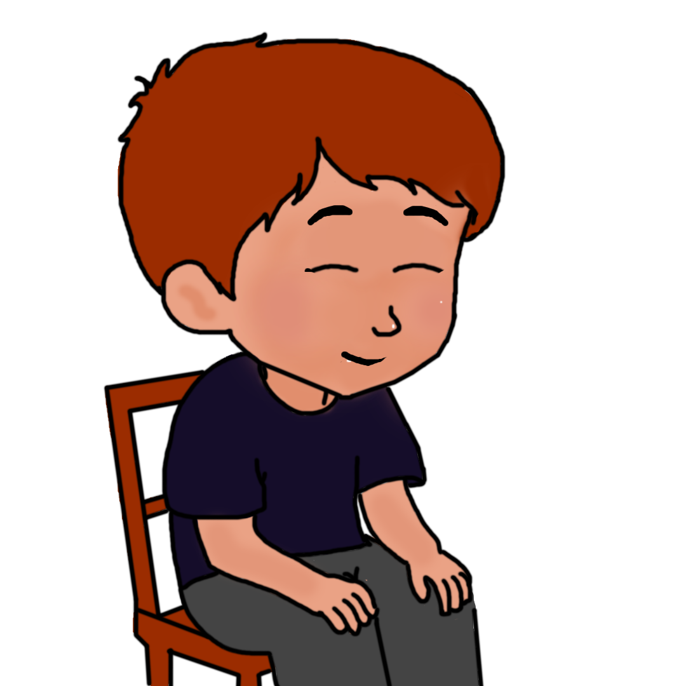
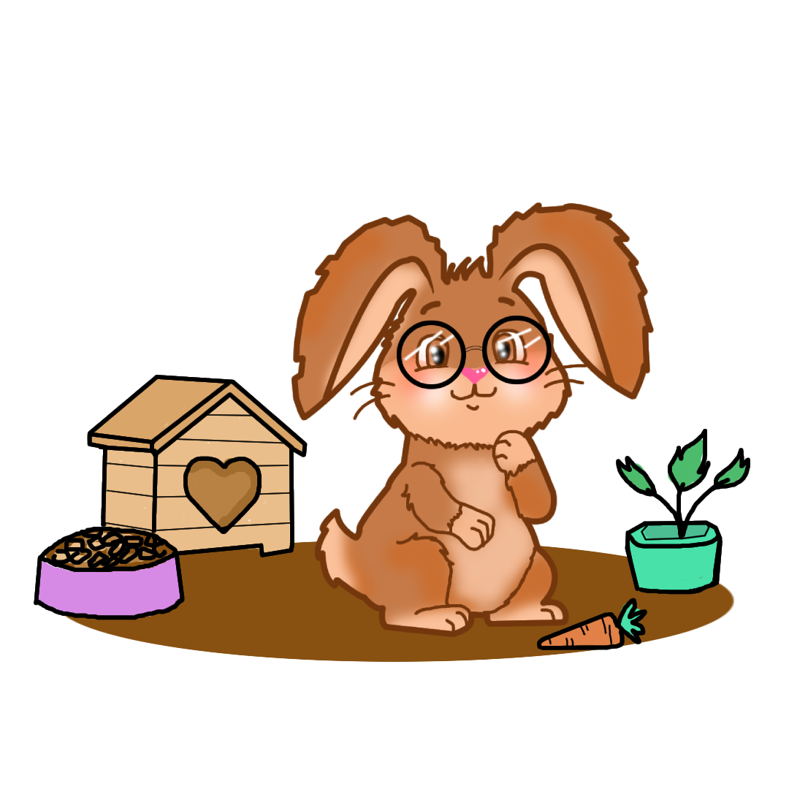
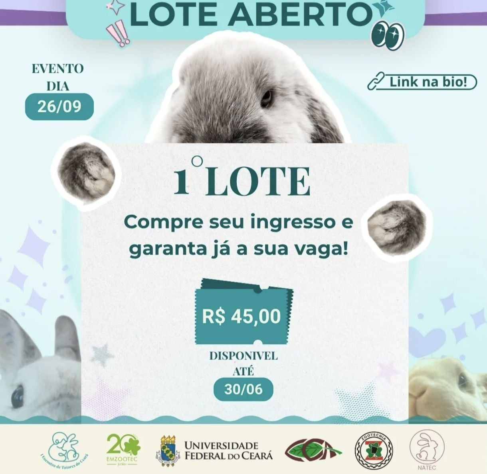
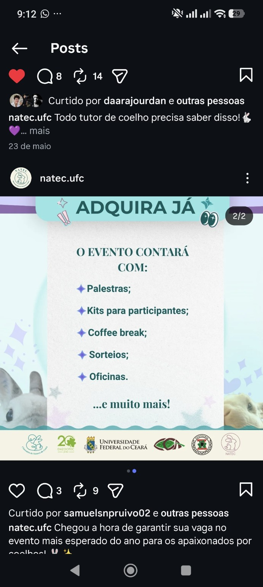
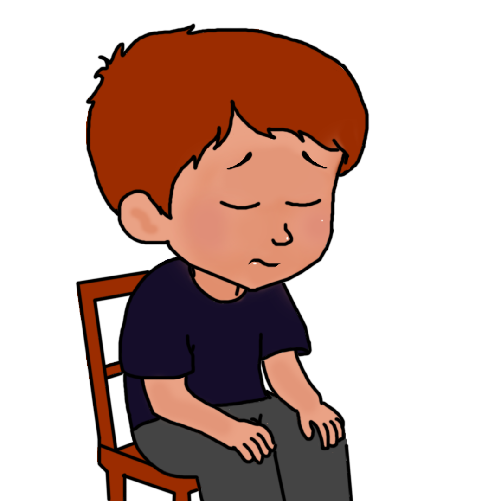

Objetivo da experiência
Transformar informações sobre manejo e bem-estar em uma experiência clara, útil e acolhedora para tutores de coelhos.
O NATEC apoia tutores com orientações acessíveis sobre alimentação, ambiente, saúde e bem-estar dos coelhos, reunindo conteúdo educativo e interação em uma experiência simples de navegar.

Esta proposta organiza o conteúdo do NATEC em formato de site. Primeiro, apresenta o projeto e orientações essenciais. Depois, convida o tutor a aprender por meio da história e das situações de cuidado do Nupi.
A Jornada do Nupi e as situações de cuidado funcionam como recursos interativos, permitindo observar diferentes ações, suas consequências e as necessidades do coelho de forma visual, leve e fácil de compreender.

Transformar informações sobre manejo e bem-estar em uma experiência clara, útil e acolhedora para tutores de coelhos.
O NATEC também promove momentos de encontro, troca e formação. Confira as informações divulgadas sobre o primeiro lote do evento.
26/09/2026
R$ 45,00
30/06
Será um dia de aprendizado, troca de experiências e conexão entre tutores, profissionais e pessoas interessadas no bem-estar dos coelhos.


Pequenos cuidados diários contribuem para a saúde, a segurança e o bem-estar. Os cards abaixo resumem pontos importantes para orientar o tutor no cotidiano.
Algumas ideias populares podem prejudicar o manejo. O site apresenta informações que ajudam a observar esses mitos com mais atenção.
Coelhos precisam de espaço para se movimentar, explorar e expressar comportamentos naturais.
A cenoura deve ser oferecida apenas como petisco. A base da alimentação deve ser o feno de capim.
A orientação veterinária especializada contribui para a prevenção e para a qualidade de vida do animal.
Acompanhe a história do Nupi e observe, etapa por etapa, como mudanças na alimentação, no ambiente e na rotina podem contribuir para seu bem-estar.
Você está em: Resgate

Doutora, resgatei o Nupi faz uns dias, mas ele vive assustado. O antigo dono deixava ele trancado numa gaiola minúscula e só dava cenoura.
Calma, vamos examiná-lo. O pessoal cai muito nesses mitos e acha que coelho é bicho de pelúcia. Gaiola estressa muito o animal e cenoura direto faz mal. É por isso que ele cresceu doente e com medo de tudo.
♥ Cada cuidado faz diferença na vida do Nupi.
Explorar situaçõesExplore cada imagem para observar o que acontece em diferentes situações. Não existem respostas certas ou erradas: cada escolha apresenta uma consequência e ajuda a compreender o cenário como um todo.
ⓘ Clique em cada imagem. As situações já observadas permanecerão marcadas.
A consequência da cena escolhida será apresentada aqui.
Compare o alimento oferecido, a frequência e os efeitos que cada situação pode trazer para a rotina do Nupi.
Para acompanhar as atividades, eventos e orientações divulgadas pelo projeto, acesse o perfil público do NATEC no Instagram.
As informações deste site têm caráter educativo e não substituem a orientação de um médico-veterinário.